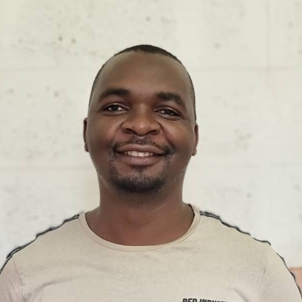

|
Claytone Sikasote I`m presently serving as a lecturer and researcher in the Department of Computer Science at University of Zambia, where I teach data mining and database systems courses. I`m generally interested in machine and deep learning approaches to solve societal problems. My primary area of interest is speech and language processing, particularly, in low-resource and multilingual setting. Previously, I was a Masters student at the Africa Institute of Mathematical Sciences for the prestigious Google and Facebook sponsored African Masters in Machine Intelligence programme, where I had the privilege to be supervised by Antonios Anastasopoulos for my research project, and with whom I still collaborate with. E-mail · Twitter · Google Scholar · GitHub · Resume |

|
|
BembaSpeech: A Speech Recognition Corpus for the Bemba Language
PDF ·
dataset ·
code ·
slides ·
video ·
poster ·
BibTex
@inproceedings{sikasote-anastasopoulos-2022-bembaspeech,
title = "{B}emba{S}peech: A Speech Recognition Corpus for the {B}emba Language",
author = "Sikasote, Claytone and
Anastasopoulos, Antonios",
booktitle = "Proceedings of the Thirteenth Language Resources and Evaluation Conference",
month = jun,
year = "2022",
address = "Marseille, France",
publisher = "European Language Resources Association",
url = "https://aclanthology.org/2022.lrec-1.790",
pages = "7277--7283",
abstract = "We present a preprocessed, ready-to-use automatic speech recognition corpus, BembaSpeech, consisting over 24 hours of read speech in the Bemba language, a written but low-resourced language spoken by over 30{\%} of the population in Zambia. To assess its usefulness for training and testing ASR systems for Bemba, we explored different approaches; supervised pre-training (training from scratch), cross-lingual transfer learning from a monolingual English pre-trained model using DeepSpeech on the portion of the dataset and fine-tuning large scale self-supervised Wav2Vec2.0 based multilingual pre-trained models on the complete BembaSpeech corpus. From our experiments, the 1 billion XLS-R parameter model gives the best results. The model achieves a word error rate (WER) of 32.91{\%}, results demonstrating that model capacity significantly improves performance and that multilingual pre-trained models transfers cross-lingual acoustic representation better than monolingual pre-trained English model on the BembaSpeech for the Bemba ASR. Lastly, results also show that the corpus can be used for building ASR systems for Bemba language.",
}
|
|
Quality at a Glance: An Audit of Web-Crawled Multilingual Datasets
PDF .
BibTex
@article{kreutzer-etal-2022-quality,
title = "Quality at a Glance: An Audit of Web-Crawled Multilingual Datasets",
author = {Kreutzer, Julia and
Caswell, Isaac and
Wang, Lisa and
Wahab, Ahsan and
van Esch, Daan and
Ulzii-Orshikh, Nasanbayar and
Tapo, Allahsera and
Subramani, Nishant and
Sokolov, Artem and
Sikasote, Claytone and
Setyawan, Monang and
Sarin, Supheakmungkol and
Samb, Sokhar and
Sagot, Beno{\^\i}t and
Rivera, Clara and
Rios, Annette and
Papadimitriou, Isabel and
Osei, Salomey and
Suarez, Pedro Ortiz and
Orife, Iroro and
Ogueji, Kelechi and
Rubungo, Andre Niyongabo and
Nguyen, Toan Q. and
M{\"u}ller, Mathias and
M{\"u}ller, Andr{\'e} and
Muhammad, Shamsuddeen Hassan and
Muhammad, Nanda and
Mnyakeni, Ayanda and
Mirzakhalov, Jamshidbek and
Matangira, Tapiwanashe and
Leong, Colin and
Lawson, Nze and
Kudugunta, Sneha and
Jernite, Yacine and
Jenny, Mathias and
Firat, Orhan and
Dossou, Bonaventure F. P. and
Dlamini, Sakhile and
de Silva, Nisansa and
{\c{C}}abuk Ball{\i}, Sakine and
Biderman, Stella and
Battisti, Alessia and
Baruwa, Ahmed and
Bapna, Ankur and
Baljekar, Pallavi and
Azime, Israel Abebe and
Awokoya, Ayodele and
Ataman, Duygu and
Ahia, Orevaoghene and
Ahia, Oghenefego and
Agrawal, Sweta and
Adeyemi, Mofetoluwa},
journal = "Transactions of the Association for Computational Linguistics",
volume = "10",
year = "2022",
address = "Cambridge, MA",
publisher = "MIT Press",
url = "https://aclanthology.org/2022.tacl-1.4",
doi = "10.1162/tacl_a_00447",
pages = "50--72",
abstract = "With the success of large-scale pre-training and multilingual modeling in Natural Language Processing (NLP), recent years have seen a proliferation of large, Web-mined text datasets covering hundreds of languages. We manually audit the quality of 205 language-specific corpora released with five major public datasets (CCAligned, ParaCrawl, WikiMatrix, OSCAR, mC4). Lower-resource corpora have systematic issues: At least 15 corpora have no usable text, and a significant fraction contains less than 50{\%} sentences of acceptable quality. In addition, many are mislabeled or use nonstandard/ambiguous language codes. We demonstrate that these issues are easy to detect even for non-proficient speakers, and supplement the human audit with automatic analyses. Finally, we recommend techniques to evaluate and improve multilingual corpora and discuss potential risks that come with low-quality data releases.",
}
|